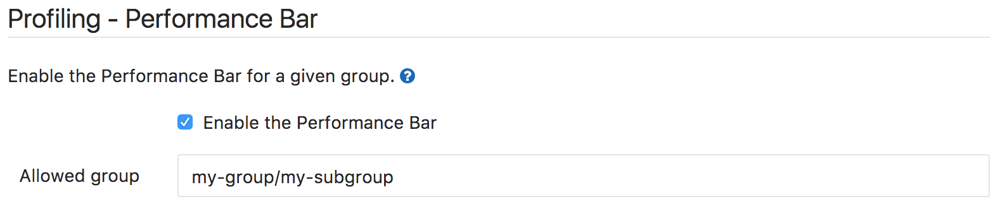
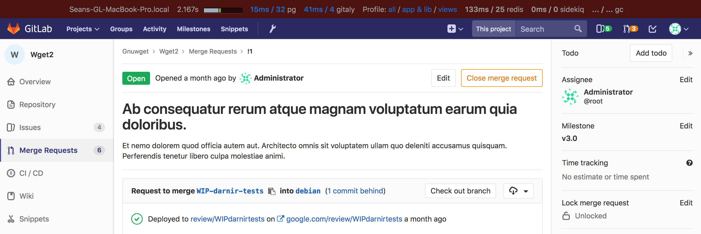
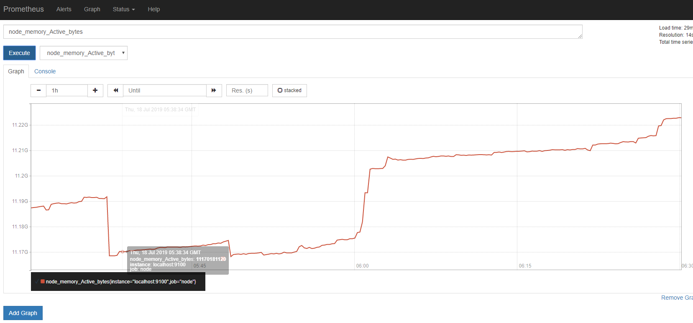
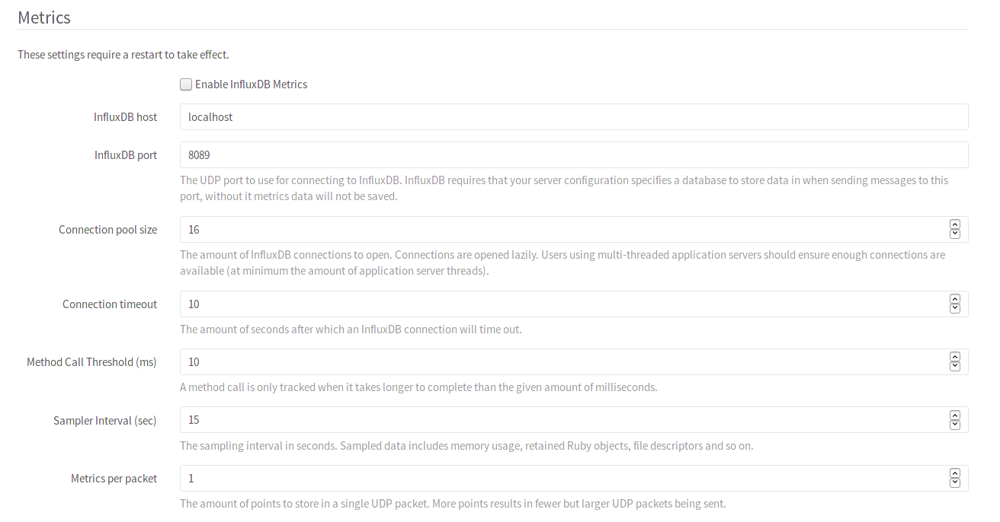
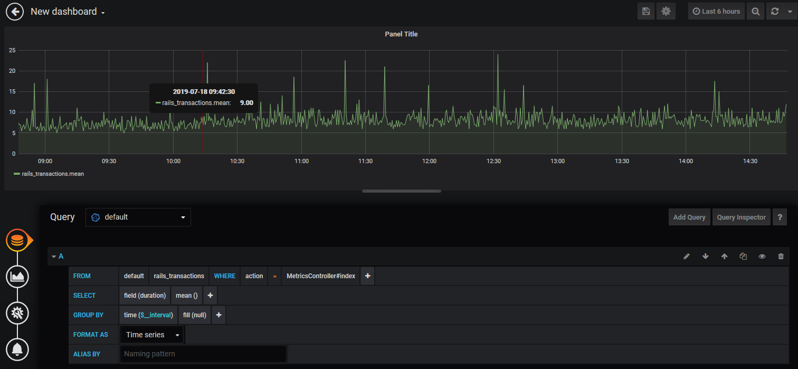

Gitlab性能监控
Gitlab项目自带了非常完备的项目监控方案，在这里做一些简单的介绍。
官方文档里提到过下面几种监控
- Performance Bar
- Monitoring GitLab with Prometheus
- GitLab Performance Monitoring with Influxdb and Grafana
Performance Bar
在Admin area中Settings > Metrics and Profiling > Profiling - Performance bar开启Performance Bar


这个监控功能很弱，只是用于在web页面端一次性显示本次访问的接口和时间开销
Monitoring GitLab with Prometheus
gitlab自带好几个服务的心跳数据exporter，例如，node_exporter，redis_exporter和postgres_exporter；并且gitlab默认安装并开启了Prometheus服务，各类的exporters会将监控数据发送给Prometheus，所以只需要配置一下Prometheus就可以查看各类的监控数据了1
2
3prometheus['listen_address'] = ':9090'
prometheus['listen_address'] = '0.0.0.0:9090'

GitLab Performance Monitoring with Influxdb and Grafana
配置influxdb
1 | # influxdb配置文件 |
用docker启动influxdb，加入存放配置文件的volume，开放8089（udp，用于gitlab推送数据），8086（grafana访问数据），8083（admin panel)1
2
3
4
5
6docker run -dti --name influxdb -v influxdb.conf:/etc/influxdb/influxdb.conf:ro \
-p 8089:8089/udp -p 8086:8086 -p 8083:8083 \
-e INFLUXDB_ADMIN_ENABLED=true \
-e INFLUXDB_ADMIN_USER={user} \
-e INFLUXDB_ADMIN_PASSWORD={passwd} \
influxdb
配置gitlab
在Admin area中的Settings > Metrics做如下配置，influxDB host按自己的情况填写

然后gitlab-ctl restrat 重启gitlab的各项服务
配置grafana
同样的，用docker启动grafana1
docker run -dti --name grafana -p 3000:3000 -e GF_SECURITY_ADMIN_PASSWORD={passwd} grafana/grafana
启动后在grafana的web界面根据influxdb的配置添加influxdb的数据源，就可以在dashboard中看到gitlab的监控数据了
